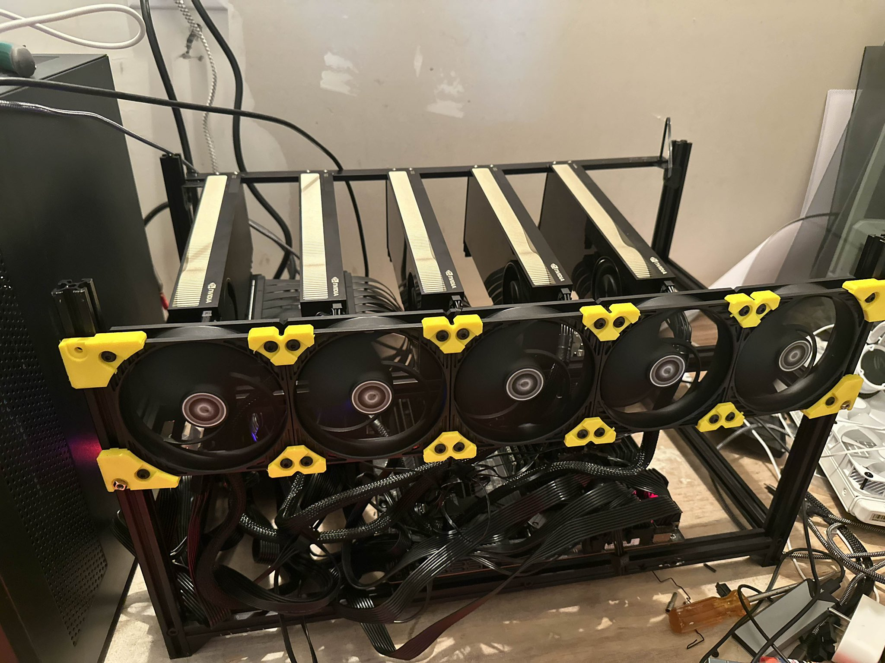

The Workhorse is dead. Long live the Workhorse

As the title states, the Workhorse is now dead.
Gutted.
And thrown together with new parts.
The only two pieces that remain the same are: - The 6000 ADA - One PSU
First though, let’s talk about why you’re staring at a ~40k machine
My motivation
I’m not here to tell you to go spend ~40-50k on a new rig. However, instead I’m here to detail my (thinly veiled) excuse to go buy these.
With the release of Kimi K2 and other such large models, I use them daily in my life. My goal originally was to get 2 M3 Ultras, smack them together, get distributed inference going, and have a gigantic 1T param model working at home.
A month of pain and suffering later, and MLX just isn’t there (yet) for my needs.
Now let’s talk about these cards. The Blackwell Max-Q’s.
- 300w max draw
- 96GB of VRAM
- ~10-20% less performant than the full 600w variant.
That’s some insane compute in a small package.
With all of my own experiments with distributed training (and my course), my 2 4090’s and the 6000 ADA just could not get me to run experiments the way I need to.
For example, when training it’s ~16x the memory cost to train a model in terms of VRAM. 2x 4090’s lets you get a 3 billion parameter model (and it will take ages to get anything done.)
With 384GB of VRAM across the cards, I can experiment with pipeline or tensor parallelism with models of up to roughly 20 billion parameters (though realistically only 8 when you consider good seq_len etc).
Along with this, they’re beasts for inference since I can run a model that’s roughly ~600B param or so quantized.
The Build
Now, let’s talk about costs (ew). First thing I will acknowledge: I got PCIe-5 based GPUs with a PCIe-4 based motherboard.
Some performance is left on the table, yes. However this build is already insanely expensive (for a consumer) and I didn’t want to drop another few thousand $$$ at the time. That could change in the future, who knows.
{Everything was purchased from eBay}
Setup:
- Motherboard: ASUS WRX80E-SAGE Pro WS SE ($636)
- CPU: AMD Ryzen Threadripper Pro 5955WX ($969)
- Cooler: Noctua NH-U12S TR4-SP3 ($115)
- RAM: 2x A-Tech 128GB 4x 32GB 3200 RDIMM EEC Memory ($709)
- Case: Veddha V4C 6-GPU Mining Case ($56)
- GPUs: 4x RTX PRO 6000 Blackwell Max-Q ($39,236) 1x RTX 6000 ADA (Bought off a friend)
Every build has quirks right?
So, one very frustrating part of this build is that this particular mining rig case was not meant for this large of a motherboard.
It took a few trips to the local hardware store, some drillbits, and moving the holes a few inches down the side to get the motherboard to kind of stay on, but it works. This was my first time ever getting a mining-rig style frame, and as a result mistakes are bound to happen.
What on earth are you going to do with this??
Mainly research. I’ve been thinking of years to make a “poor man’s” guide to FP8, and so I’m currently running a wide sweep of experiments on that now.
I also will be finally able to host very large models (including with CPU offloading from the 256GB of ECC memory I have) and start playing around with how that works more.
Would I recommend this to most people? No. From my early results, if you’re considering a build like this, just get 2. That alone is enough for you to see benefits from FP8, and you can train a 12 billion parameter model if you’re careful.
We live in a world where VRAM is king, and I’m not saying to go into debt to buy this card. But, if you’ve been sitting on your cards for a number of years, and want 4x the vram of a 4090 using less power than it, the max-q is not a bad option.